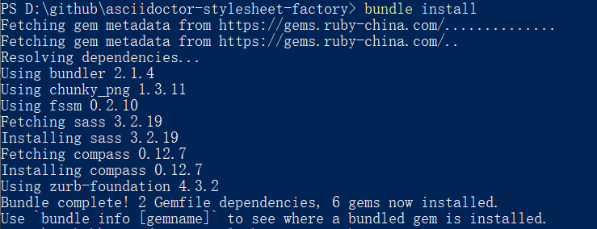
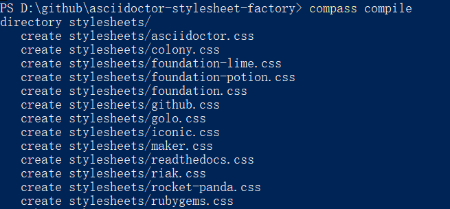

1. 前言
-
提供从0开始编写本博客的经验技巧
-
由于每个人的知识体系不完全相同，一定会遇到不太明白的地方，不用管，直接往下操作，操作结束了就会有自己的认识
-
建议查看前便下载基于本总结的博客模板：传送门，提取码：aa2a
1.1. 适合读者
-
前端小白
-
个人博客编辑者
2. 个人博客road_list
目前仅有首页、故事两个页面，未来将尝试加入Issue、APP两个页面。
2.1. 产品定位
-
开源的、即开即用、高度定制化的个人信息管理器
-
在github的Page上分享，全开源，并提供全部的部署教程，和自行DIY教程
-
分享个人技术、产品等想法经历
-
自行开发一些实用小程序，支持用户git clone到本地使用
2.2. 思维导图
-
首页即博客列表页面，每页放置4-8篇博客导航，博客均为较长文档，可以通过博客页面中的目录进行页内导航。
-
Issue页面，集合学习过程中，遇到并处理了的小型问题，不需要太长篇幅，以“知乎”型瀑布流的方式，将所有小型问题集合在同一页面内，支持对Issue的展开和收起；导航栏根据Issue的题目进行导航，与业内加载的Issue同步显示。
-
APP页面，最开始是一些自己写的小脚本，比如批量渲染adoc文档并入博客模板的Python脚本，之后会做一些基于HTML的本地工具，比如集合了印象笔记任务清单+日历+甘特图功能的小型提示工具。
-
故事页面，以图片的形式，讲述一些自己的故事，由于GitHub Page在国内不易打开，以外文形式展示，希望将来可以与外国友人交流。
-
公共模块，即顶部导航栏和底部导航栏，提供多个页面的切换，以及针对当前页面内容的搜索功能。
2.3. 产品原型图
已用Axure 9生成原型图，点击查看
2.4. 项目甘特图
搭个博客，相对来讲工作还不会太难，10天左右，一边学习一边写博客就能做到，简单介绍一下学习栈：
-
HTML和CSS：参考书《HTML5和CSS3设计模式》，项目实战“本博客模板与adoc渲染出的模板的整合”，详见制作自己的模板
-
JQuery：参考书《锋利的JQuery》，项目实战为“学习HTML5模板，实现博客页面的目录动效”，详见[jquery]
-
asciidoctor：参考网页AsciiDoctor用户手册，项目实战为“编写每一章的博客并使用Ruby的相应gem包渲染”，中间还了解了一些Ruby知识，详见页面编辑技巧：使用AsciiDoctor+模板完成博客页面书写
-
其他前端小技巧：可见icon技巧：fontawesome和fontdiao和图片预览技巧：fancybox
但如果，同时还要完成一些博客内容，比如日常的：学习Java、学习K8S等等；线上上课，需要花双倍的时间在学校课程上；最近的校招启动又得好好准备简历，这样下来任务就多得难以应付了。
甘特图是一个奇妙的东西，我从印象笔记中找到了这个神奇的模板，之后就停不下来了，将所有的任务分开记录、分开提醒、分开放在甘特图中。这样，每天做了什么，任务点完成了哪里，就一目了然，回顾一下发现这几天分外充实。
如果有需要的话，推荐用它来管理下自己多线程工作的进度。
3. icon技巧：fontawesome和fontdiao
在自己编写博客以前，从来以为图标是需要了就去网上下的……
当然确实可以如此，但很多常见图标，实际上已经有公共的网站提供了。
其中，大名鼎鼎的fontawesome提供了非常多的常用图标，基本涵盖了大部分的国外企业图标；如果要找国内的，网友们推荐阿里相关的图标库，我找到的是fontdiao，一个暂时不会更新但也足够用的图标库，本博客的豆瓣图标便源于此。
那么这些该怎么用呢？
4. 图片预览技巧：fancybox
如果想要图片可以放大缩小、打开关闭、甚至还能放幻灯片，而又没精力深度研究JS，建议使用fancybox来赋能图片页面。
本博客的使用例子便是故事页面
随便点开一张图，就可以体会到fancybox的快捷。
5. 页面编辑技巧：使用AsciiDoctor+模板完成博客页面书写
5.1. AsciiDoctor的安装
AsciiDoctor是使用Ruby语言所写的一款插件，类似MarkDown语法。
-
安装Ruby，到官网下载
-
修改gem sources
-
安装AsciiDoctor，在控制台运行
gem install asciidoctor即可安装，运行$ asciidoctor --version检查版本
|
安装好ruby后，不建议直接使用gem install安装gem，被墙非常慢。 目前国内镜像源为 https://gems.ruby-china.com/ ，打开cmd，运行以下代码修改源 gem sources -l //查看<目前ruby gems源> gem sources -r <目前ruby gems源> //删除目前ruby gems源 gem sources -a https://gems.ruby-china.com/ //新增ruby gems源 |
5.2. AsciiDoctor-stylesheet-factory （模板工厂）
5.2.1. 安装
-
从模板工厂的github代码库中，使用`git clone <url>`，clone github 代码库到本地
-
进入本地代码库，使用文本编辑器，修改Gemfile中的source为 https://gems.ruby-china.com/

-
cd到本地代码库，运行
bundle install
|
官方文档默认读者熟悉Ruby和Gemfile，这里的bundle install，针对指定的项目文件运行，而不是全局安装，因此需要cd到指定的文件目录中才可以 |
5.2.2. 生成模板
安装好相应的gems后，便可以开始生成模板。
-
cd到本地Asciidoctor stylesheet factory代码库
-
运行
compile命令compass compile

5.2.3. 使用模板渲染生成html
现在可以尝试用生成的模板渲染自己的adoc，示例adoc名称为mysample.adoc
adoc和渲染命令如下：
= Introduction to AsciiDoc Doc Writer <doc@example.com> A preface about http://asciidoc.org[AsciiDoc]. == First Section * item 1 * item 2 [source,ruby] puts "Hello, World!"
asciidoctor -a stylesheet=colony.css -a stylesdir=../stylesheets mysample.adoc
上述命令会将colony.css中的内容放到渲染出的html中。
如果希望建立html到css的href，增加一句linkcss即可，示例如下：
asciidoctor -a linkcss -a stylesheet=colony.css -a stylesdir=../stylesheets mysample.adoc
这样就可以保证输出的html的header不会充满了大量的预定义class，从而增加html的可读性
5.2.4. 制作自己的模板
如上所示，我们可以使用asciidoctor支持的css模板渲染adoc，生成html。但是生成的html属于纯阅读型文档，并不能附带博客模板的各种奇幻效果。因此，接下来将展示，如何自己debug将asciidoctor模板css与massively HTML5模板css合并，实现每页博客的酷炫效果。
|
若需补充相关css知识，见 【前端笔记】HTML和CSS 若需补充相关Python知识，见 link:todo 若需补充相关JavaScript和JQuery知识，见 link:todo |
这一页有空补充。
6. 制作批量模板生成脚本
在完成了上述模板调试后，我写了一个Python脚本，能够直接将所有adoc文件夹下的adoc文件转化为自己想要的html文档，这样就不用每写一篇adoc文档，用控制台调用半天asciidoctor，再复制粘贴进模板html了。
脚本地址为script/auto_html.py，使用时需要安装好Python、Ruby的asciidoctor gem，并配置好环境变量。下载博客模板，提取码：aa2a
下载好本博客的框架，在adoc下面书写自己的内容，注意，为统一起见将所有的主文档命名为main.adoc，之后在script文件夹上使用shift+鼠标右键，在此处打开shell，输入python auto_html.py，等待运行结束便可以得到从adoc渲染好的html文档，统一命名为adoc.html。
在index.html上改写自己的标题并输入链接即可完成一次新博客的更新。
之后将发布更完全的版本，一行代码同时完成博客页面的渲染和主页项目栏更新。